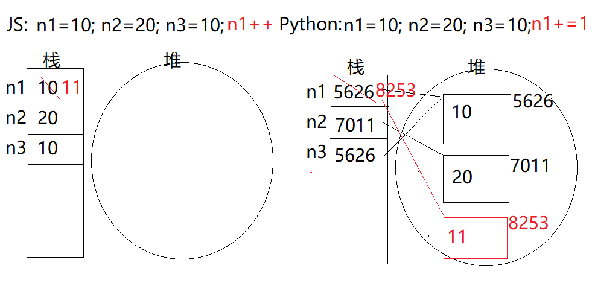

01.复习
复习：
掌握一门新编程的步骤：
(1)了解背景
历史：89年 1991年：V1 2000年：V2 2008年：V3
特点：简单、强大、开源、跨平台
应用领域：运维、桌面、爬虫、Web、科学、AI
(2)搭建环境
安装Python解释器，注意Add Python to PATH
交互模式、脚本模式
(3)变量常量
Python中没有常量定义法
声明变量： age = 20
输出变量： print( '年龄为：%d %s'%(age,uname) )
查看类型： type(age)
查看内存： id(age)
(4)数据类型
(5)运算符
(6)逻辑结构
(7)通用小程序
(8)函数对象
(9)官方函数对象
(10)第三方函数对象
1.Python中的数据类型
(1)数字类型：
int：整数，无限整数， int( )
bool：布尔，True-1/False-0
float：浮点数， float( )
complex：复数
(2)字符串类型：
str：字符串，单引号/双引号/三引号，使用[s:e]访问字符
(3)序列类型：
list：列表，内容可变的数组 [1, 2, 3] list()
tuple：元组，内部不可变的数组 (1, 2, 3) tuple()
range：范围，指定开始/结尾/步长的整数序列 rang()
(4)集合类型：
set：集合，无序的没有重复元素的数组 set()
创建集合：s1 = set( 序列对象 ) s2 = { 值1, 值2,... }
添加元素：s1.add(值)
删除元素：s1.remove(值)
注意：集合中的每个元素没有下标！不能访问第i个；不存在修改第i个元素的做法！
(5)映射类型：
dict：字典，保存多个键值对的数组，类似于JS中的对象直接量，但是下标必须用引号括起来
创建字典： d1 = { 'key':value, 'key': value, .... }
添加元素： d1['newKey'] = value
删除元素： del d1['key']
练习：创建一个商品对象（字典），让用户从键盘输入商品名称、单价、购买数量，最后输出：
“商品名称：xxx 单价：xxx 购买数量： xxx 小计：xxx”
Python数据类型分类（简化版）：
①不可变类型：int / float / bool / str / tuple / range
②可变类型：list / dict / set
2.Python中的运算符
(1)算术运算： + - * / %(取余) //(取商) **(幂)
注意：Python中没有 ++ 和 -- 运算
(2)比较运算：> >= < <= == !=
注意：Python中没有=== 和!==，可以使用id()相等与否代替，或者使用is和is not运算符代替
(3)逻辑运算： and、 or、 not
注意：Python中不能写作 &&、||、!
(4)位运算： &(按位与)、|(按位或)、^(按位异或)、~(按位取反)、<<(按位左移)、>>(按位右移)
(5)赋值运算：=、+=、-=、*=、/=、%=、//=、**=
(6)其它运算： is、 is not ——身份运算符 in、not in——成员运算符

练习：从键盘读取一个年份数字输入，判断该年份是否是闰年
练习：输出本世纪(2000~2100)所有的闰年
数字a=5，想a变大16倍，如下哪个方法的计算速度最快？
A) a * 16
B) a = a*16
C) a = a << 16
D) a = a << 4
3.Python中的逻辑结构
程序 = 数据 + 算法
算法，有三种执行逻辑：
①顺序逻辑 输入>计算>输出
②选择逻辑
③循环逻辑
JS中的选择逻辑有：if...else... switch...case...
Python中的选择逻辑只有： if...else....
if 判断条件 :
执行体
IF外面的语句
if 判断条件 :
执行体
else :
执行体
IF外面的语句
if 判断条件 :
执行体
elif 判断条件 :
执行体
else :
执行体
IF外面的语句
练习：让用户从命令行输入登录用户名，再输入登录密码，如果用户名为admin密码为123456，则输出“登录成功”否则输出“登录失败”
练习：数据库中使用一个数字表示订单的状态，如10-待付款、 20-发货中、 30-已完成、 其它-不可识别的订单状态；创建一个数字表示订单状态，根据其值输出对应的描述文字——使用两种方法实现
JS中的循环逻辑有：for(){ } while(){ } do{}while() for(..in..) for(..of...)
Python中的循环逻辑只有： for..in.. while...(不知道循环次数/死循环)
for tmp in range/list/tuple/set/dict :
循环主体
FOR循环外面的语句
while 循环条件 :
循环主体
WHILE循环外面的语句
注意：for..in可以遍历range/list/tuple/set/dict，但是while只能遍历list/tuple！
说明：for和while循环中，可以使用continue跳过此次循环进入下一次循环目的；可以使用break打断当前循环退出到外面的目的
练习：创建一个元组，其中包含若干正数、负数等数字，使用循环计算所有这些数字的和，并输出
练习：创建一个元组，其中包含若干正数、负数等数字，使用循环计算所有这些数字的和(负数不要)——continue，并输出
练习：创建一个元组，其中包含若干正数、负数等数字，使用循环计算所有这些数字的和，一旦和超过100则立即停止不再添加——break，并输出此时的和
4.Python中的函数
定义：一段可以反复多次使用的代码段
定义函数：
def 函数名( 形参列表 ) :
函数主体
return 返回值
调用函数
变量名 = 函数名( 实参列表 )
5.课后练习
课后练习——通用小程序
(1)创建函数 print99( )，在命令行中输出九九乘法表
(2)创建函数 getLeapYears(start, end)，将指定范围内的闰年保存在一个list中，并返回
(3)创建函数 getPrime(start, end)，将start~end之间的所有质数保存到一个list中，并返回